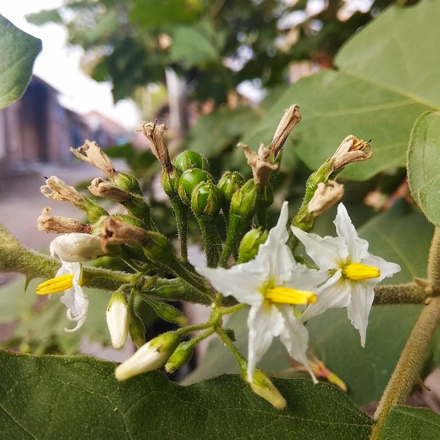

टर्की बेरीTurkey Berry
Solanum torvum · Solanaceae · FLR-0377

- Scientific name वैज्ञानिक नाम
- Solanum torvum Sw.
- Family कुल
- Solanaceae
- Hindi हिंदी
- टर्की बेरी
- Local names स्थानीय नाम
- turkey berry, pea eggplant, prickly nightshade, wild eggplant
- Status here यहाँ की स्थिति
- naturalized
- Movement आवागमन
- Resident, here all year
- Known from कहाँ दर्ज
- Others have published records from the wider Awadh–Purvanchal plain, none yet from Basti–Ayodhya अवध–पूर्वांचल से दूसरों के प्रकाशित अभिलेख, बस्ती–अयोध्या से अभी नहीं
- IUCN IUCN
- not evaluated
- Review समीक्षा
- not yet reviewed
When to look कब देखें
Present all year. साल भर मौजूद।
Uses and possibilities उपयोग और संभावनाएँ
“Traditional medicine” means a documented traditional use, not a claim that it works. Nothing on this page is medical advice.
Drawn from the documented uses in the profile below, where each is labelled traditional, current or a research lead. All uses →
टर्की बेरी / Turkey Berry
Solanum torvum Sw. — Solanaceae
टर्की बेरी — यह अवध के रास्तों के किनारे और परती जमीन पर उगने वाली एक कांटेदार जंगली झाड़ी है जो बैंगन के कुल (सोलेनेसी) से संबंधित है। इसके तनों पर तीखे मुड़े हुए कांटे होते हैं और पत्ते चौड़े व रोएं वाले होते हैं। इस पर सफेद तारे जैसे फूलों के गुच्छे आते हैं और बाद में मटर के दाने जितने गोल, हरे फल लगते हैं जो पकने पर पीले हो जाते हैं। इसके कड़वे कच्चे फलों का उपयोग पारंपरिक औषधि और सब्जी में होता है।
Quick Identification त्वरित पहचान
| Feature | Description |
|---|---|
| Habit | Robust, bushy, erect spiny perennial shrub branching widely from base |
| Prickles | Scattered short, stout, hooked or straight prickles on stems and petiole bases |
| Leaves | Broadly ovate, sinuate-lobed, densely clothed with stellate tomentum beneath |
| Flowers | White, star-shaped, five-lobed corollas borne in dense branched corymbose cymes |
| Fruit | Globose, pea-sized berries in compact upright clusters, green turning dull yellow |
Robust spiny shrub distinguished from domestic eggplant by its tall bushy growth, star-shaped white flowers in branched corymbs, and clusters of small marble-sized green berries.
Field tip: Look along rural roadsides and sunny waste dumps for tall spiny bushes laden with tight upright clusters of round green marble-like berries.
हिंदी: तीखे कांटों वाली ऊंची जंगली झाड़ी जिसके तनों पर कांटे, सफेद फूल और मटर जैसे गोल हरे फलों के गुच्छे होते हैं।
Morphology आकारिकी
| Feature | Description |
|---|---|
| Stems | Woody at base, densely stellate-pubescent, armed with scattered stout prickles |
| Leaves | Alternate, broadly ovate-elliptic, sinuately lobed, stellate-hairy on both sides |
| Inflorescence | Lateral, branched, many-flowered corymbose cymes with glandular pedicels |
| Corolla | Star-shaped, rotate, white with five triangular-lanceolate lobes |
| Berries | Spherical, glabrous, green with faint marbling when young, turning dull yellow |
| Measurement | Measurement not available in consulted open sources. |
A robust spiny shrub clothed in dense stellate hairs. The stems bear sharp hooked prickles. The leaves are large, broadly ovate, shallowly lobed, greyish-green, softly pubescent with star-shaped hairs. Flowers are white with five spreading corolla lobes surrounding bright yellow connivent stamens. Fruits are smooth globose berries produced in dense upright clusters.
हिंदी: इसके तनों पर कांटे और रोएं होते हैं। पत्ते चौड़े और खांचेदार होते हैं। फूल सफेद और तारे जैसे होते हैं जिनके बीच में पीले पुंकेसर होते हैं। फल छोटे गोल और चिकने होते हैं।
Behaviour & Ecology पारिस्थितिक भूमिका
A vigorous, sun-loving ruderal shrub native to the Neotropics (the Caribbean, Central and South America) and widely naturalized across the Old World tropics. It rapidly colonizes disturbed ground, rural waste heaps, and ditch banks. Its deep branched taproot enables survival through hot dry summers. The flowers are buzz-pollinated by large bees. Birds consume the ripe yellow berries, voiding the viable seeds in droppings.
हिंदी: यह मूल रूप से उष्णकटिबंधीय अमेरिका का पौधा है जो अब भारत के ग्रामीण रास्तों और परती जमीन पर पूरी तरह बस चुका है। यह धूप वाली जगहों पर तेजी से फैलता है और पक्षी इसके बीज बिखेरते हैं।
Life Cycle / Phenology जीवन चक्र
Perennial shrub capable of growing and reproducing throughout the year under warm conditions. Seed germination is stimulated by disturbed soil and open sunlight. Plants flower within six months of germination, blooming and setting fruit almost continuously, with peak fruit set following the monsoon rains from August to December. Seeds remain viable in soil seed banks for multiple seasons.
हिंदी: यह सालों-साल जीवित रहने वाली झाड़ी है जो साल भर फलती-फूलती रहती है। बरसात के बाद इसमें सबसे ज्यादा फूल और फल आते हैं और इसके बीज मिट्टी में कई साल सुरक्षित रहते हैं।
Associated Species / Interactions संबद्ध प्रजातियाँ और सहजीवन
The spiny branches offer secure nesting cover for farmland birds. The flowers are visited and buzz-pollinated by native solitary bees, carpenter bees, and other pollinators that vibrate the rigid poricidal anthers. Ripe fruit clusters are eaten by frugivorous birds and bats, which disperse the seeds along fence-lines and roadsides. As a wild solanaceous shrub, it also hosts various polyphagous garden insects and bugs.
हिंदी: इसके कांटेदार झाड़ पक्षियों को सुरक्षित शरण देते हैं। इसके फूलों पर मधुमक्खियां आती हैं और फलों को पक्षी खाकर बीज फैलाते हैं।
Pests and Diseases कीट और रोग
Exceptionally resistant to root-knot nematodes and bacterial wilt (Ralstonia solanacearum), which makes it widely prized as a rootstock for grafting commercial eggplants. Foliage is occasionally fed upon by epilachna ladybird beetles and flea beetles.
हिंदी: इसकी जड़ें मिट्टी के कीड़ों और जीवाणु रोगों के प्रति अत्यंत प्रतिरोधी होती हैं, इसलिए वैज्ञानिक बैंगन की अच्छी कलम लगाने के लिए इसकी जड़ का उपयोग करते हैं।
Agricultural / Human Relevance कृषि प्रासंगिकता
Widely utilized in traditional medicine and rural folk cookery. In southern and eastern Indian culinary traditions, the bitter green berries are boiled, curried, or salted and sun-dried into crunchy medicinal fritters (sundakkai). In Ayurveda and folk medicine, extracts of the berries and roots are used for cough, asthma, digestive disorders, and inflammation. Because of its hardy root system, it is an ideal graft rootstock to protect cultivated brinjal from bacterial wilt.
हिंदी: इसके कड़वे कच्चे फलों को सुखाकर या उबालकर पारंपरिक औषधीय सब्जी बनाई जाती है जो पेट के कीड़ों और खांसी-दमा में लाभकारी मानी जाती है। बैंगन को रोगों से बचाने के लिए इसकी कलम बांधी जाती है।
Expected Locally स्थानीय रूप से अपेक्षित
Not a field record. Written from published accounts for eastern Uttar Pradesh. No confirmed local sighting yet — if you have seen it, that is what the atlas needs.
अभी तक स्थानीय पुष्टि नहीं। यह विवरण प्रकाशित स्रोतों से है, किसी अवलोकन से नहीं।
Common in ruderal wasteland, along village compost edges, canal roadsides, and overgrown orchard margins throughout the middle Gangetic plains. Observers in eastern Uttar Pradesh should check roadside ditch banks and waste ground for spiny bushes with upright clusters of green berries.
GBIF holds published records from the wider Awadh–Purvanchal plain, none yet from Basti–Ayodhya.
A first local record for the atlas would be a clear photograph showing diagnostic features, accompanied by date, time, and precise location coordinates sent through the project's About page.
हिंदी: बस्ती और अयोध्या में रास्तों के किनारे, घूर के गड्ढों और परती जमीन पर यह कांटेदार झाड़ी आसानी से मिल सकती है। फलों के गुच्छों की फोटो खींचकर एटलस को भेजें।
Distribution वितरण
Global range: Native to the Neotropics (the Caribbean, Central and South America); widely introduced and naturalized throughout tropical Asia, Africa, and the Pacific.
In India: Thoroughly naturalized in waste places across all states in peninsular and northern India.
In Uttar Pradesh: Distributed throughout the plains as a ruderal weed of roadsides and degraded scrub.
In Basti district / eastern UP: Documented across disturbed rural habitats based on published regional floristic checklists.
हिंदी: यह अमेरिका का मूल निवासी है लेकिन अब पूरे भारत और उत्तर प्रदेश के गांवों में रास्तों के किनारे और परती जमीन पर पूरी तरह प्राकृतिक रूप से बस चुका है।
Research Questions शोध प्रश्न
- What is the grafting compatibility and disease-resistance transfer rate of Solanum torvum rootstocks with local Awadh brinjal cultivars?
- How does the presence of roadside turkey berry patches influence Leucinodes orbonalis infestation in adjacent vegetable fields? / क्या सड़क किनारे उगी टर्की बेरी से बैंगन के खेतों में कीड़े फैलते हैं?
- What are the primary steroidal alkaloid concentrations present in immature berries harvested for culinary use?
- A schoolchild can compare the prickles and white flowers of turkey berry with those of a cultivated brinjal plant / क्या कोई बच्चा टर्की बेरी के कांटों और फूलों की तुलना घरेलू बैंगन से कर सकता है?
- Which avian frugivores are the primary seed dispersers of naturalized Solanum torvum along railway lines?
हिंदी: क्या इस जंगली झाड़ी की जड़ पर बैंगन की कलम लगाने से बीमारी रुकती है? क्या बच्चे इसके कांटों और फलों को देखकर पहचान सकते हैं?
Similar Species मिलती-जुलती प्रजातियाँ
| Species | How to tell apart | हिंदी | |
|---|---|---|---|
| Brinjal \ | Solanum melongena | Cultivated plant; flowers violet or purple; fruits huge, fleshy, solitary or paired | घरेलू बैंगन के फूल बैंगनी होते हैं और उसका फल बहुत बड़ा और गूदेदार होता है |
| Yellow-berried Nightshade \ | Solanum virginianum | Diffuse prostrate prickly herb with long yellow spines and large yellow berries | भटकटैया जमीन पर फैली होती है जिसके कांटे बहुत लंबे-पीले होते हैं और फल बड़े पीले होते हैं |
Field rule: Tall spiny shrub with star-shaped white flowers and tight upright clusters of round green marble-sized berries.
हिंदी: तीखे कांटों, सफेद फूलों और मटर जैसे गोल हरे फलों के खड़े गुच्छों वाली ऊंची जंगली झाड़ी।
Taxonomy & Classification वर्गीकरण
Original description. Swartz (1788), Nova Genera et Species Plantarum seu Prodromus, p. 47; described under the name Solanum torvum.
Subspecies. Monotypic species. Native to the Neotropics and widely naturalized in India. Duthie (1911, p. 126) did not include S. torvum as an established species in the flora, noting under S. indicum that it is a common plant in Bengal that 'may very possibly occur within this area.'
Family and order placement. Belongs to the nightshade family Solanaceae, order Solanales, class Magnoliopsida.
Phylogenetic notes. Placed in the large subgenus Leptostemonum (the spiny solanums), characterized by stellate hairs and epidermal prickles.
IUCN status rationale. Not currently evaluated on the IUCN Red List of Threatened Species.
हिंदी: इसे 1788 में स्वार्ट्ज ने Solanum torvum नाम से वर्णित किया था। यह सोलेनेसी कुल के कांटेदार समूह (लेप्टोस्टेमोनम) से संबंधित है।
Photo Gallery फोटो गैलरी
No photos yet — add field photos to media/species/turkey_berry/ and run node scripts/sync_photos.js.
Photos needed आवश्यक फोटो
- [ ] Flowering branch showing white star-like corollas and prickles (कांटेदार टहनी पर खिले सफेद तारे जैसे फूल)
- [ ] Upright cluster of unripe green marble-like berries (हरे गोल फलों का खड़ा गुच्छा)
- [ ] Bush growing in disturbed roadside ruderal habitat (सड़क किनारे उगी हुई पूरी झाड़ी)
References संदर्भ
- Original description: Swartz, O. (1788). Nova Genera et Species Plantarum seu Prodromus. M. Swederi, Holmiae, Upsaliae, Aboae, p. 47.
- Hooker, J. D. (1883). The Flora of British India. Vol. 4. L. Reeve & Co., London, p. 234.
- Duthie, J. F. (1911). Flora of the Upper Gangetic Plain, and of the Adjacent Siwalik and Sub-Himalayan Tracts. Vol. 2. Superintendent of Government Printing, Calcutta, p. 126 (note under S. indicum).
- Pandey, G., Prajapati, K. K. & Pandey, R. (2024). Distribution, Taxonomy and Medicinal Importance of Solanum torvum Sw. Phytotalks, 1(2), 95–105.
- GBIF Occurrence Data — Solanum torvum, India (2025).
Source file: species/flora/shrubs/turkey_berry.md